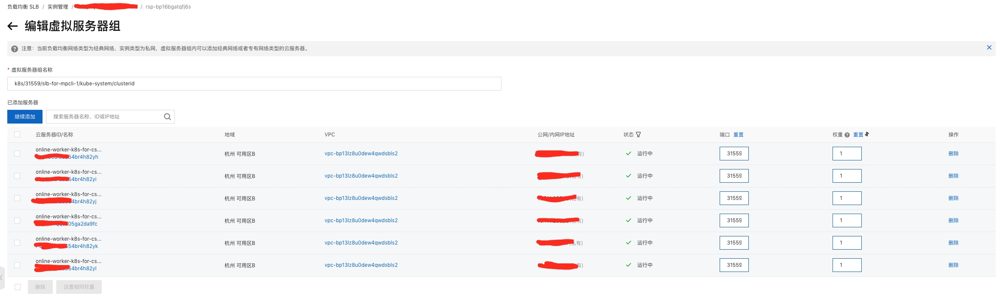

一般网关作为流量出入的网卡，接收整个集群的请求，但这样带来了一些不方便：大杂烩式的管理，单独排查某个服务的请求时，不够方便。
实际情况中，存在某几个重要的服务，承载了大部分流量，它们的重要性足以让我们为其单独投入精力。我们为其设立独立的 SLB。
K8s 集群 yaml 创建 SLB
给出一个样例 service.yaml。
apiVersion: v1
kind: Service
metadata:
annotations:
service.beta.kubernetes.io/alibaba-cloud-loadbalancer-cert-id: ${证书 ID}
service.beta.kubernetes.io/alibaba-cloud-loadbalancer-protocol-port: https:443,http:80
service.beta.kubernetes.io/alibaba-cloud-loadbalancer-spec: slb.s2.small
service.beta.kubernetes.io/alicloud-loadbalancer-address-type: internet
labels:
app: slb-for-console
name: slb-for-console
namespace: kube-system
spec:
externalTrafficPolicy: Local
ports:
- name: http
port: 80
protocol: TCP
targetPort: 80
- name: https
port: 443
protocol: TCP
targetPort: 80
selector:
app: ingress-nginx
type: LoadBalancer
type: LoadBalancer 表明该 Service 会触发云平台 SLB 的创建。
annotations 中的配置项参考：https://help.aliyun.com/document_detail/86531.html，涉及到内网/外网型，规格大小，以及 HTTP 协议等。
然后需要注意的：我们选择的 7 层 SLB，无论 HTTP 和 HTTPS 请求，经过这个 SLB 后，就不再区别，因此我们必须将所有请求都转发到后端服务的 80 端口。所以会有：
- name: https
port: 443
protocol: TCP
targetPort: 80
对应 K8s 的 SLB
由上述 service.yaml 内容，由阿里云创建的 SLB 与一般 SLB 不同。
一般的 SLB 后端是虚拟机（ECS），需要人手工将 ECS 的信息注册到 SLB 背后，譬如虚拟机 IP 地址，端口等。如果后端虚拟机加了一台或者减了一台，就需要人工将这个变化同步到 SLB 上。缺点：完全不适应 K8s Pod 形式，因为 K8s 集群上的实例（Pods）升级后/迁移后都是变化的。
service.yaml 创建的 SLB 就是专门为了兼容 K8s 的场景而设计的。这种 SLB 后端不再是固定的 ECS，而是 “虚拟服务器组”。阿里云文档中这样描述：
负载均衡默认是在实例维度上维护后端服务器组，即实例下的所有监听都使用相同的后端服务器组。虚拟服务器组允许用户在监听维度上个性化定义服务器组，即实例下的不同监听可使用不同的后端服务器组，可满足域名和URL转发个性化需求。
“虚拟服务器” 是一种规则，通过这规则找到符合要求的后端实例，比如说这个规则是 K8s 集群的所有工作的节点。

这个端口不是业务服务的端口，然是 Service 暴露的端口。

另外，虚拟服务器组与后端实例的绑定建立起来，后端实例的变动会同步到 SLB 上。反过来，我们不要主动去修改 SLB 的配置，避免和后端实例起冲突。